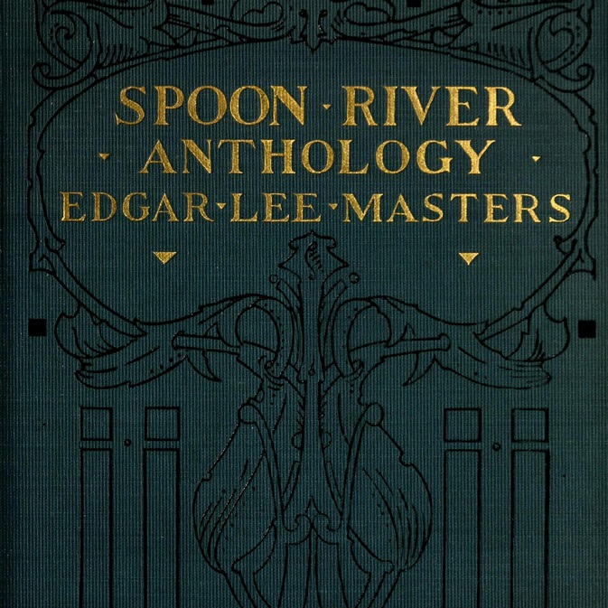
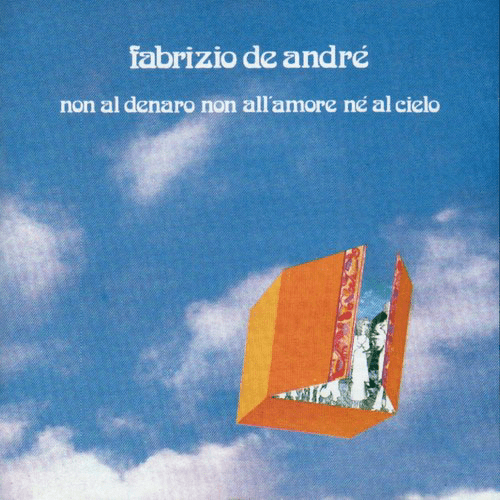

What do Masters' masterpiece and Non al denaro non all'amore nè al cielo have in common? Is it possible to compare a collection of poems and a concept album? Here is a topic interpretation project through the BERTopic topic modeling techinque and the KeyBERT keyword extraction techinque.
Spoon River Anthology was first published in 1914 under the pseudonym Webster Ford. In its final version, the Master's major work consists of 244 poems narrating the epitaths of the residents of the fictional town Spoon River.
Non al denaro non all'amore né al cielo was released in 1971. It is a concept album made up of 9 songs, whose content and topics were mainly inspired by Master's Anthology and its Italian translation by Fernanda Pirovano.
